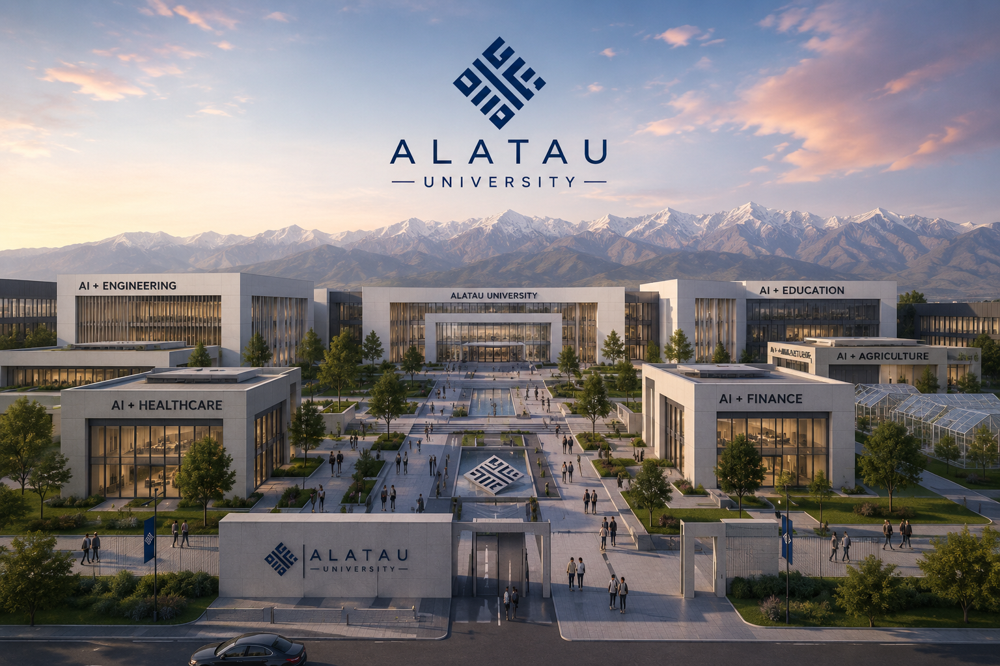
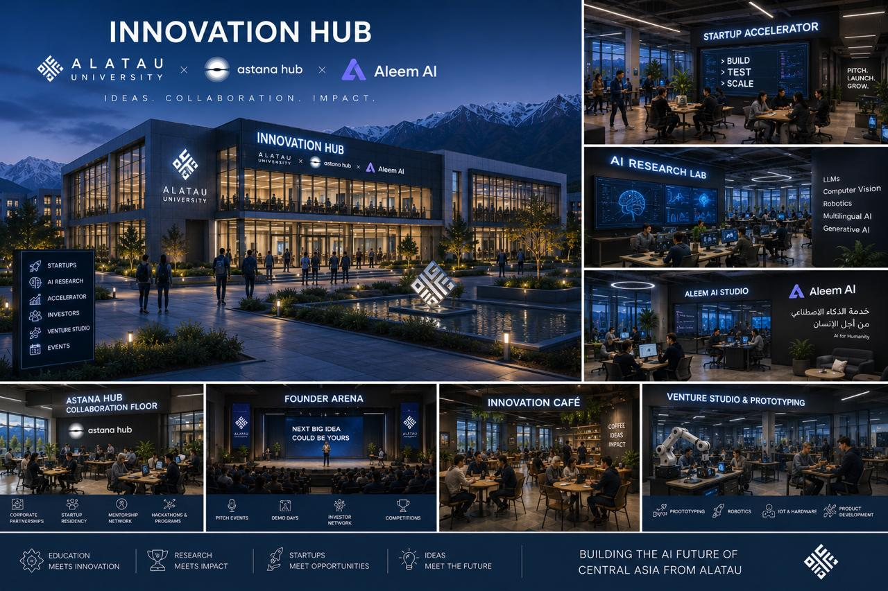
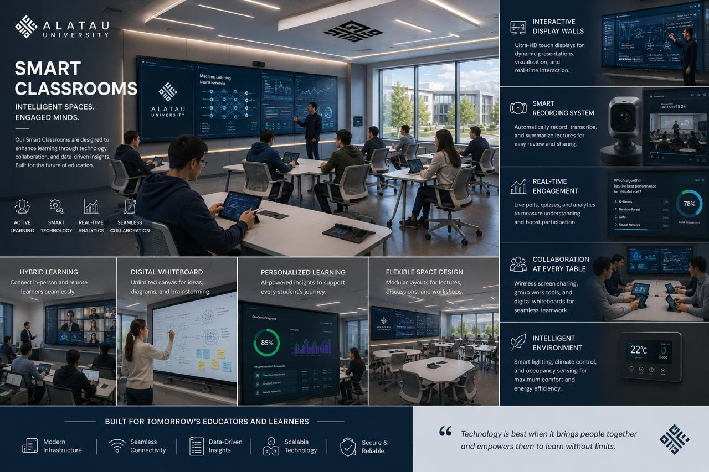
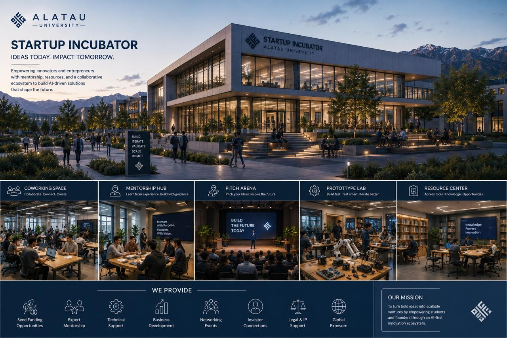

Our Vision
To become the premier technology and innovation hub of Central Asia, shaping a future-driven ecosystem where students solve real-world problems from day one.
Southern Kazakhstan's first AI-focused university
Southern Kazakhstan's first AI-focused university, built to prepare the next generation of global tech leaders, innovators, and entrepreneurs.



Mission, vision, strategy
At AU, we bridge the gap between traditional academia and the rapidly evolving tech landscape. Students do not have to relocate to capital cities like Astana or Almaty to receive a world-class education in technology. We bring the future directly to Taraz.
To become the premier technology and innovation hub of Central Asia, shaping a future-driven ecosystem where students solve real-world problems from day one.
To provide industry-driven, English-medium education that empowers students with high-paying career opportunities and global mobility.
We integrate cutting-edge Artificial Intelligence with Agriculture, Health, Finance, and Education through practical lab research and corporate partnerships.
AU by the numbers
Academic programs
We offer flexible, forward-thinking curriculums designed in collaboration with top tech founders and industry experts. Programs are delivered primarily in English to ensure our graduates are competitive on the global stage.
Master advanced algorithms, machine learning, and data analytics.
Drive innovation in the financial sector through modern software solutions.
Apply AI for crop monitoring, predictive analytics, and sustainable drone farming.
Build smart diagnostics and data systems for modern medical institutions.
Research & practical opportunities
Education at AU is built on real action. We operate as a live technology ecosystem where students do not just study theory - they build products.
Work with state-of-the-art infrastructure and hardware from your first semester.
Join innovation communities, tech festivals, and campus incubation programs.
Learn alongside industry leaders, business owners, researchers, and mentors.
Experience campus life
We provide a safe, disciplined, and vibrant environment where student life thrives. From modern, comfortable dormitories to active student clubs and English-speaking networks, our campus supports your personal and professional growth.
Book a Campus TourOur partners & network
We bridge academia with the corporate world. AU students regularly intern, collaborate, and secure jobs with top tech companies, banks, innovative startups, and regional enterprises.
Latest news & blog



Admissions
Admissions requirements include a motivation letter, IELTS, and ENT or SAT results. Scholarship tracks include AI Talent, Future Leaders, Girls in Tech, and Founder.